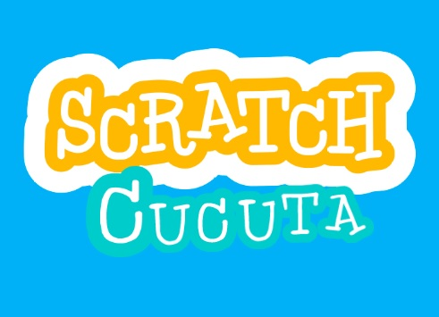
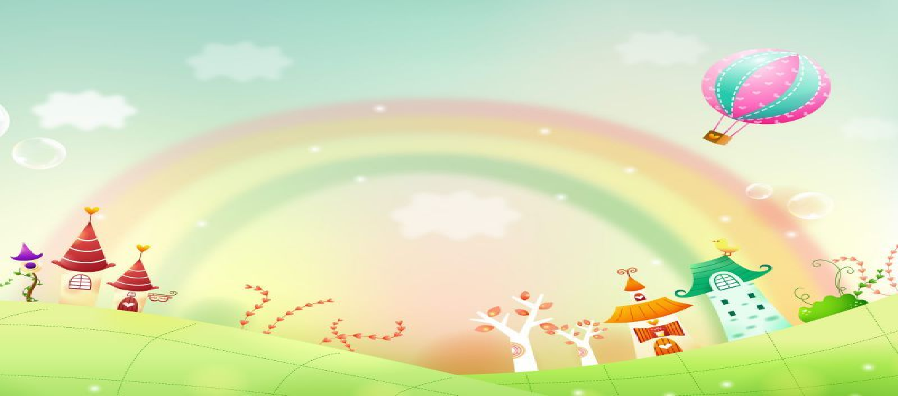

TITULO DE LA PÁGINA (EJEMPLO BLOG)
Primera entrada del blog .....Un blog es un sitio web o parte de un sitio que contiene contenidos actualizados regularmente sobre uno o varios temas. El término es la abreviatura de «web log», que significa registrar información en un sitio web.
Segunda entrada del blog .....Un blog es un sitio web o parte de un sitio que contiene contenidos actualizados regularmente sobre uno o varios temas. El término es la abreviatura de «web log», que significa registrar información en un sitio web.

Primera entrada del blog .....Un blog es un sitio web o parte de un sitio que contiene contenidos actualizados regularmente sobre uno o varios temas. El término es la abreviatura de «web log», que significa registrar información en un sitio web.

En esta parte se colocara los comentarios que será construido por bootstrap